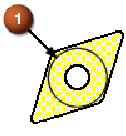
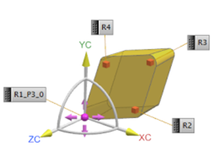

Change the insert size
-
Click the Tool tab.
-
In the Insert Size group, from the Measurement list, select Inscribed Circle (IC).
The Inscribed Circle (I.C.) option allows you to enter the diameter of the circle that determines the overall tool size (1).
-
In the Diameter box, type 0.250.
-
Click the Tracking tab.
-
In the Tracking Points group, from the P Number list, select P3.
-
In the Preview group, click Display
 .
.

-
Click OK to complete the tool definition.
The Create Tool dialog box is displayed.
-
Click Cancel to close the Create Tool dialog box.
-
. In the Machine Tool view of the Operation Navigator, notice that the diamond insert is placed inside the FACE2 pocket.